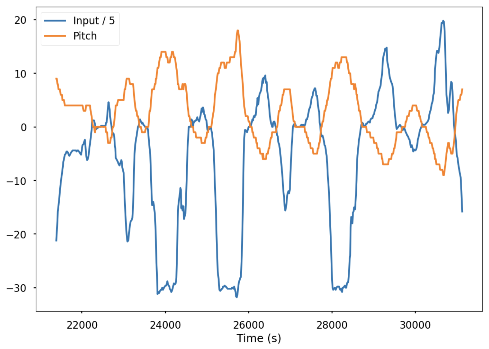
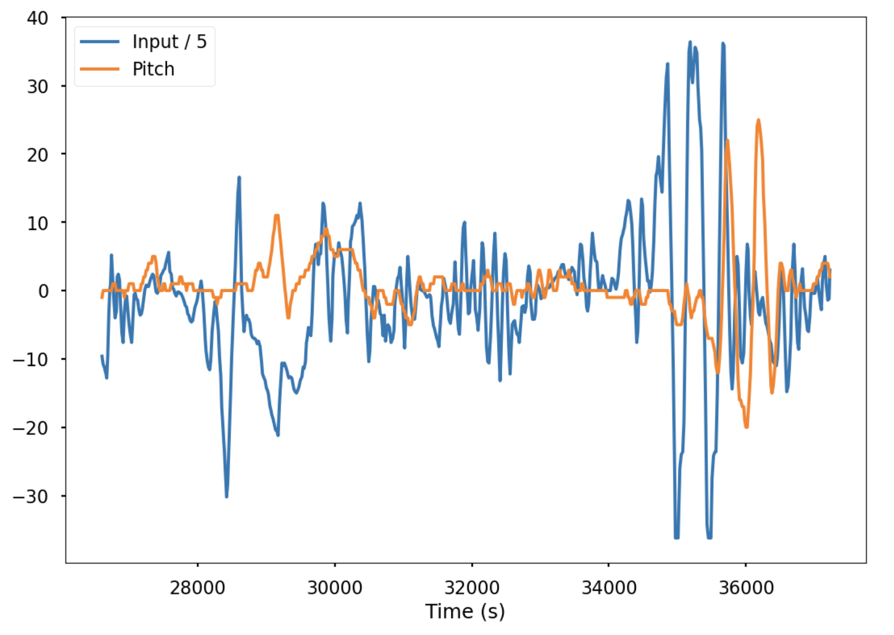

The goal of this lab was to implement a balancing algorithm similar to an inverted pendulum to keep the RC car balanced on two wheels. While there are multiple methods to implement a balancing algorithm, including developing state-space methods such as using an LQR controller, I chose to take a simpler approach using a modified PID controller based on a physics model that I developed. Over time, the method for controlling the system was adapted to improve performance. However, hardware limitations prevented a highly robust controller from being developed.
As an initial approach, I drew a simple free-body diagram to examine the forces acting on the car as it balances on two wheels, particularly focusing on anything that causes torque around the center of mass of the car. The forces identified were the force of gravity, normal force, and force exerted by the controller. Rather than focusing on restorative control, I initially focused on simply keeping the torque equal to 0. To do this, I tried to find a coefficient that would keep the car at roughly whatever initial angle it was started at. After that, I started adding an additional PID controller to create a restorative force.
Since the force that the wheels need to exert scales with the tangent of angle, the input force becomes, quite reasonably, infinite as the car falls flat. The inputted PWM also isn’t proportional to force but velocity, so the PWM would have to increase exponentially to keep the car at a non-zero angle. This introduced a problem where the torque on the wheels was limited by what the motors would provide. Luckily, the goal is to balance around a vertical position, so as long as the car remains within a range of the goal angle, the maximum PWM should never be reached.
To implement the controller, I used a similar method to orientation control in lab 6. However, to optimize for computation, I isolated the code such that it would not listen for bluetooth signals. The key to being able to complete the inverted pendulum problem was using DMP, which provided much more accurate pitch data than using just the accelerometers. This allowed me to balance around a relatively consistent angle. However, even with DMP, the angle would shift slightly, so I implemented a command that would allow me to make slight correct to the angle that the robot is balancing around.
For the PID control, I initially decided to write a controller proportional directly to the pitch of the car, instead of the tangent. Since, at small angles, the response should be linear, this should work. However, later, I switched to having the controller proportional to the tangent of the pitch, since the linear controller would not work well when there were large oscillations. After finding a Kp term that just barely avoided oscillations, I tried running the system but found that the car would fall over too easily. Therefore, I eventually added a derivative controller designed to prevent the car from falling in any direction. I tuned the Kd term to just barely reach the vertical position after recovering from a 20-degree lean. My final Kp and Kd values were 600 and 0.3 respectively.
In the simulator, the algorithm is run. The robot moves around the map, and the predicted location of the robot is updates as it moves. The red in the simulator corresponds to the information generated by the odometry model. Meanwhile, the gread corresponds to the ground truth and the blue line corresponds to the robot’s belief. Since the robot’s ground truth and belief remain consistent after multiple iterations of running the simulator, the Bayes filter seems to be accurate in its localization.